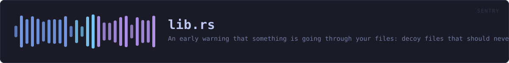

crates/veilvoice-sentry/src/lib.rs
veilvoice-sentry · 247 lines · read the source here · or on GitHub
An early warning that something is going through your files: decoy files that should never change, and a measure of how fast a directory tree is changing.
The word this crate does not use
It does not prevent anything. By the time a canary has been encrypted, whatever encrypted it has already been running for some number of seconds and has already reached some number of real files. What this buys is the difference between finding out now and finding out when you next open a document, which is a real difference, and it is the whole of what is on offer. See SCOPE.
Stopping a process mid-run needs an interposition point in the kernel: fanotify with FAN_OPEN_PERM on Linux, a filesystem minifilter on Windows. The Windows one requires a code-signing identity issued to a verified legal entity, which this project does not have and will not get, because it is published under a pseudonym on purpose. ROADMAP.md records that as a decision rather than an omission.
The two signals, and what each is worth
canary, decoy files that should never change. A file nothing legitimately touches is a clean signal: if its contents differ from what was planted, something walked the directory and wrote to everything it found. Very few false positives, and one enormous hole: it only fires if the attacker reaches it. Something that encrypts only .docx under one folder will never see a canary planted anywhere else, and this crate cannot tell you that it did not fire because nothing happened.
rate, how much of a tree changed and how fast. No blind spot, and far weaker evidence: a restore from backup, importing a camera card, a compiler, or a synchronisation client catching up all look exactly like a mass rewrite, because they are one. rate::Churn therefore reports numbers and a rate::Concern level against a threshold you set. It never reports "ransomware", because it does not know that and neither does anything else that only counts files.
Used together they are worth more than either: a canary hit and a high churn rate at the same moment is a much stronger statement than either alone. That is a judgement for the front end to present, not for this crate to make on the user's behalf.
What it cannot tell you: who
Nothing here names a process. Attribution needs system auditing that is normally switched off, and it lives in veilvoice-guard rather than here. veilvoice_guard::who_touched takes a path and usually, honestly, answers that it does not know. This crate deliberately does not depend on that one: a project that wants canaries should not have to take a cryptography stack with them.
Entropy is a hint and never evidence
entropy measures Shannon entropy in bits per byte, and encrypted data sits near 8.0. So does a JPEG, a .zip, a video, and this project's own .veil container. High entropy is only meaningful for a file whose contents this crate planted and therefore knows should have been prose. It is used for exactly that and nothing else.
In plain words
This watches for the pattern ransomware makes.
It leaves a few files lying around that nothing has any reason to touch, and it counts how fast files in a folder are being rewritten. Something quietly encrypting your documents trips both.
It is a warning, not a defence. It notices; it does not stop anything, and it can be fooled by anything patient enough to go slowly.
WHAT THIS FILE CONTAINS
247 lines defining 4 functions (1 public), 1 type and 2 constants. Everything below is read out of the source, so it cannot disagree with the code.
The types it owns.
enum Errorline 127 — Everything that can go wrong in this crate.
What happens when it runs. These are the ways in: public, and nothing else in this file calls them, so they are what an outside caller reaches first.
entropyline 104 — Shannon entropy of bytes, in bits per byte, from 0.0 to 8.0.
WHAT CALLS WHAT
The functions this file defines, and the calls between them. An edge means the callee's name appears, called, inside the caller's body — a syntactic reading, not a type-resolved one.
The same graph as Mermaid source
%%{init: {"theme":"base","themeVariables":{"background":"#1a1b26","primaryColor":"#1f2335","primaryTextColor":"#c0caf5","primaryBorderColor":"#7aa2f7","secondaryColor":"#16161e","tertiaryColor":"#16161e","lineColor":"#737aa2","textColor":"#c0caf5","mainBkg":"#1f2335","nodeBorder":"#7aa2f7","clusterBkg":"#16161e","clusterBorder":"#2f3549","fontFamily":"ui-monospace, SFMono-Regular, Consolas, monospace","fontSize":"14px"}}}%%
flowchart TD
n_entropy(["entropy<br/>line 104"])
n_from["Error::from<br/>line 135"]
n_fmt["Error::fmt<br/>line 141"]
n_source["Error::source<br/>line 150"]
click n_entropy href "https://github.com/tilas01/veilvoice/blob/main/crates/veilvoice-sentry/src/lib.rs#L104" "open the source"
click n_from href "https://github.com/tilas01/veilvoice/blob/main/crates/veilvoice-sentry/src/lib.rs#L135" "open the source"
click n_fmt href "https://github.com/tilas01/veilvoice/blob/main/crates/veilvoice-sentry/src/lib.rs#L141" "open the source"
click n_source href "https://github.com/tilas01/veilvoice/blob/main/crates/veilvoice-sentry/src/lib.rs#L150" "open the source"
classDef entry fill:#1f2335,stroke:#7aa2f7,color:#c0caf5
class n_entropy entry
classDef helper fill:#1f2335,stroke:#bb9af7,color:#c0caf5
class n_from,n_fmt,n_source helperThis site loads no third-party script, so it cannot run Mermaid; the diagram above is the same nodes and edges drawn by the generator instead. GitHub renders the source below directly.
ITEMS
| Item | Line | Documentation |
|---|---|---|
VERSION pub const | 81 | Crate version string, surfaced in the About panel. |
SCOPE pub const | 87 | What this crate is worth, in the words a front end should show. |
entropy pub fn | 104 | Shannon entropy of bytes, in bits per byte, from 0.0 to 8.0. |
Error pub enum | 127 | Everything that can go wrong in this crate. |
Error::from fn | 135 | |
Error::fmt fn | 141 | |
Error::source fn | 150 |